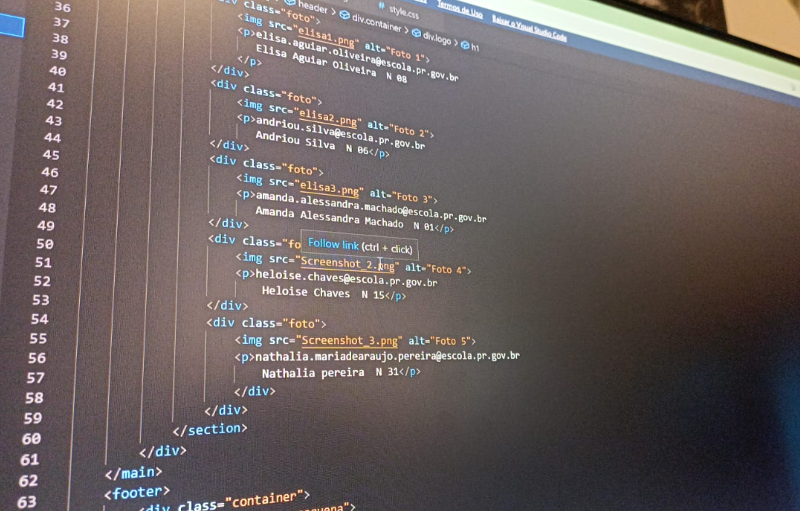
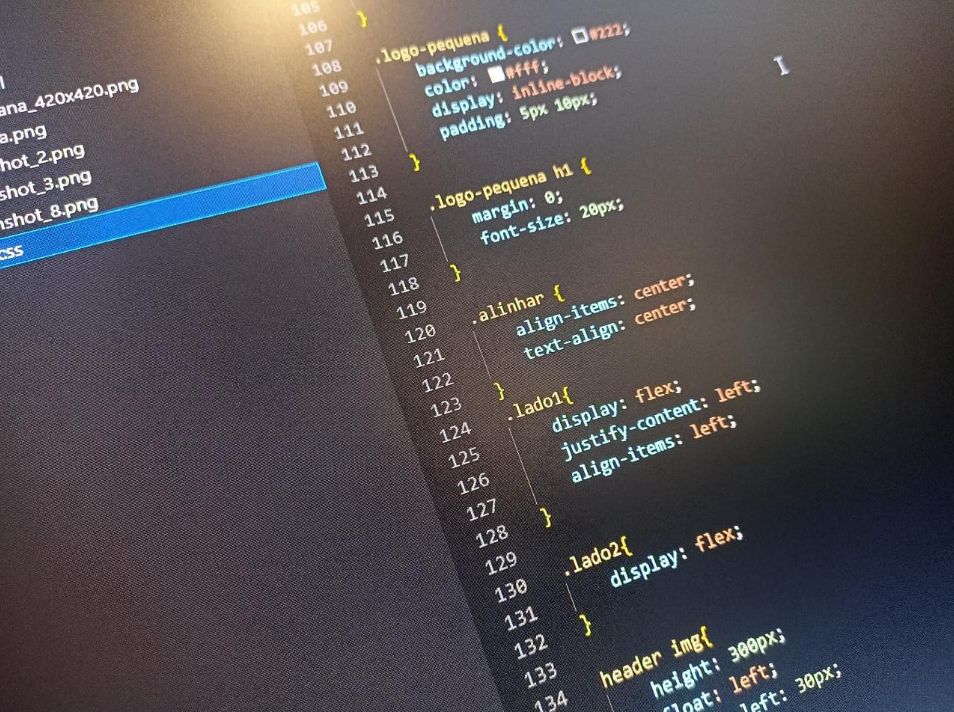

Produção do trabalho
Trabalhamos nessa atividade algumas semanas, alguns de nós ja tinham uma noção básica de programação e outros nunca tiveram contato com essas linguagens. Durante as aulas aprendemos muito sobre o funcionamento do HTML e CSS e conseguimos desenvolver nosso primeiro site. Do nosso ponto de vista, a programação tem sido um conhecimento muito cobrado na atualidade, acreditamos que no futuro as aulas que tivemos vão nos auxiliar na construção de uma vida estável e organizada. É inegavel a importância da implementação de programação nas escolas, e é um privilégio ter a chance de adquirir esse tipo de conhecimento. Fotos do processo de programação do nosso site:
 Nosso grupo
elisa.aguiar.oliveira@escola.pr.gov.br Elisa Aguiar Oliveira N 08 |Cuidou do cabeçalho
andriou.silva@escola.pr.gov.br Andriou Silva N 06| Cuidou das cores e titulos
amanda.alessandra.machado@escola.pr.gov.br Amanda Machado N 01 | Cuidou dos textos e imagens
heloise.chaves@escola.pr.gov.br Heloise Chaves N 15 | Adicionou as imagens dos participantes
nathalia.mariadearaujo.pereira@escola.pr.gov.br Nathalia pereira N 31 | Fez o rodapé